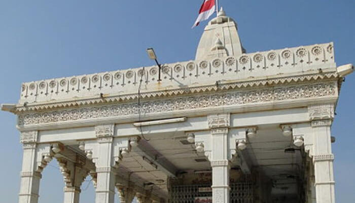
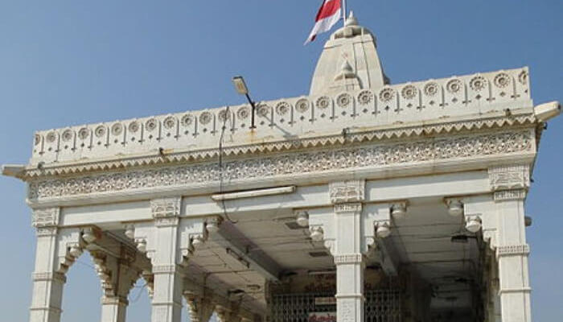

MAJOR TOURIST ATTRACTIONS IN BHAVNAGAR:
| Takhteshwar Temple | Gaurishankar Lake | Nilambagh | Velavadar National Park |
| Victoria Park | Barton Museum | Barton Library | Khodiyar Mandir |
| Aksharwadi Temple | gopnath beach | malnath hills | jain temple palitana |
Bhavnagar is a tiny town that greets everybody with its richness of traditions, enlaced in the modern life. Due to its closeness to the sea, the city has always been an important centre of trade and commerce of cotton goods. Today this large provincial city has some intriguing temples, museums and also serves as a gateway to several parks and reserves including Velavadar Blackbuck National Park. The city has associations with Mahatma Gandhi, who went to university here, and relics of his life can be seen at Gandhi Smriti in the 1895 AD Barton museum building, which also has a collection of coins, stamps, guns and other arms, sculpture and folk arts. It is a bustling trading centre with colourfully set bazaars, people sporting blood-red turbans, puppet sellers, and festivals and fairs. Takhteshwar Temple, Gaurishankar Lake, Nilambagh, Velavadar National Park, Victoria Park, Khodiyar Mandir, Aksharwadi Temple, and Shri Adishwar Temple are some important tourist attractions, which are worth a visit on a holiday to Bhavnagar.
Founded in the year 1823 as the fortified capital of Bhavsinhji Gohil, Bhavnagar, today, stands as an important industrial hub of India. The Gohils had moved from Marwar and established their center at a village called Vadva which is the present Bhavnagar city. Earlier, the city was protected by a fort as it used to be the major port for almost two centuries connecting places like Africa, Mozambique, Zanzibar, Singapore and the Persian Gulf with India. Later, the successors of Bhavsinhji Gohil continued doing trade in a similar manner. By the 19th century, Bhavnagar attained a status of a developed state; in fact, it was the first state in India to build its personal railway system, without any aid from the central government. Applauds and laurels didn't end here, Bhavnagar was also the first state to join the Indian Union.
Book and history lovers have lot many reasons to visit Bhavnagar as the city is home to the classiest and oldest Barton Library, Barton Museum and Gandhi Smriti, a significant Gandhian institution founded in the memory of Mahatma Gandhi in January 1948. It has around 40,000 books on Gandhian thought and social sciences, a Gandhi picture gallery, a museum and Khadi Gram Udyog bhandar. The Nilambagh, once the former ruler's residence, is also an important tourist attraction of Bhavnagar. This majestic attraction of Bhavnagar is now converted into a hotel property with a great banquet hall and peacocks in the garden. The marble temple of Takhteshwar, about 5 km on the way to Mahuva atop a hill is another place of tourists interest. This beautiful structure in marble was built a century ago and offers a panoramic view of scenic surroundings.
Bhavnagar is also an empyrean for the wildlife aficionados, who wish to explore the best of nature in the most pristine form. Bhavnagar's Gaurishankar Lake, frosqm where the city gets its water supply, is a popular picnic spot. Victoria Park, a protected tropical forest, few hours from the teeming metropolis, is often visited by many wildlife lovers. One can explore the wilderness in the park by walking on the foot, or by hiring a cab. Towards the North side of Bhavnagar is 36 sq km flat grassland called Valavadar National Park, home to over 1000 blackbucks. A walk through the park at dusk provides glimpses of blackbucks, wolves and nilgai that concentrate at the park's watering holes. Also, there is a museum which houses ancient coins, copper plates and seals found in the area.
For visitors, Bhavnagar is also a convenience base for exploring the magnificent temples town of Palitana. This hustling pilgrimage town, 51 kms southwest of Bhavnagar, is an important site in terms of Jainism history and heritage. An extraordinary cluster of 1008 temples crowns the two main summits of Palitana's hill and covers the saddle linking them. As well as some superb examples of Jain art and architecture, Palitana is also a significant centre for the Muslim religion, possessing an amazing shrine of Angar Pir.
Bhavnagar is beautiful! It's a land of blackbucks, birds, industries, artists, artisans and lots of other talented people. Embark on a tour to Bhavnagar to witness the most vivid wildlife sanctuaries, religious shrines and heritage locations.
THINGS TO DO IN BHAVNAGAR
Where to Stay
Tourists can find many budget accommodations in the old city, nearby the railway station. All these budget accommodation are well-appointed with the basic amenities like attached bathroom, comfortable bedding, polished furniture, etc. Since the city is an important industrial hub of Gujarat, here one can find many budget hotels catering to the most discerning travelers with traditional hospitality and grace. Bhavnagar is amongst those royal cities of India and is perhaps the only one where the royal tradition is still intact. For those who are looking forward to a luxurious stay in Bhavnagar with the family then they can check in the Nilambagh Palace Hotel, a heritage hotel, which used to be the private residence of Bhavnagar's rulers.
Mentioned below is the list of hotels in Bhavnagar: